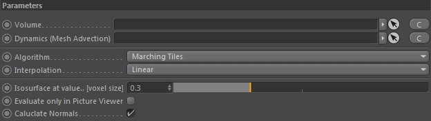
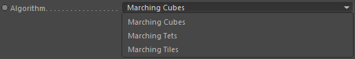
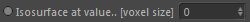
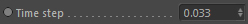

Parameters
Parameters

Volume
Drop any volume here that you want to mesh. This node is required.
Dynamics (Mesh Advection)
Takes a fluid dynamics node to extract velocity information from. This node is optional.
If linked activates the 'Time step' setting and allows simple mesh advection which can generate sharper meshes.
Algorithm

Defines the algorithm used to create the mesh.
Marching Cubes
Very fast algorithm but can produce artefacts (like missing polygons). Perfect for previews.
Marching Tets
Pretty fast algorithm but good surface quality.
Marching Tiles
Slower algorithm but very good surface quality. Also it allows to use a lower voxel scale in the linked surface reconstructor because it operates in subgrids.
Isosurface at value.. [voxel size]

This allows to shrink the surface to get smaller features. Most of the time positive values between 0.2 and 0.8 give best results.
You should definetly use this instead of lowering the Particle Radius in the Surface Reconstructor.
Evaluate on in picture viewer
If activated it will only operate if rendering to the picture viewer or via network rendering.
Calculate Normals
Calculates smooth normals for the mesh. This is much better than letting C4D calculate phong normals from the mesh (which happens if deactivated).
Time step

Only used if a Fluid dynamics node is linked. This will allow mesh advection according to a velocity motion field.
The time step is given in seconds.A value of 0.0 will deactivate the mesh advection.